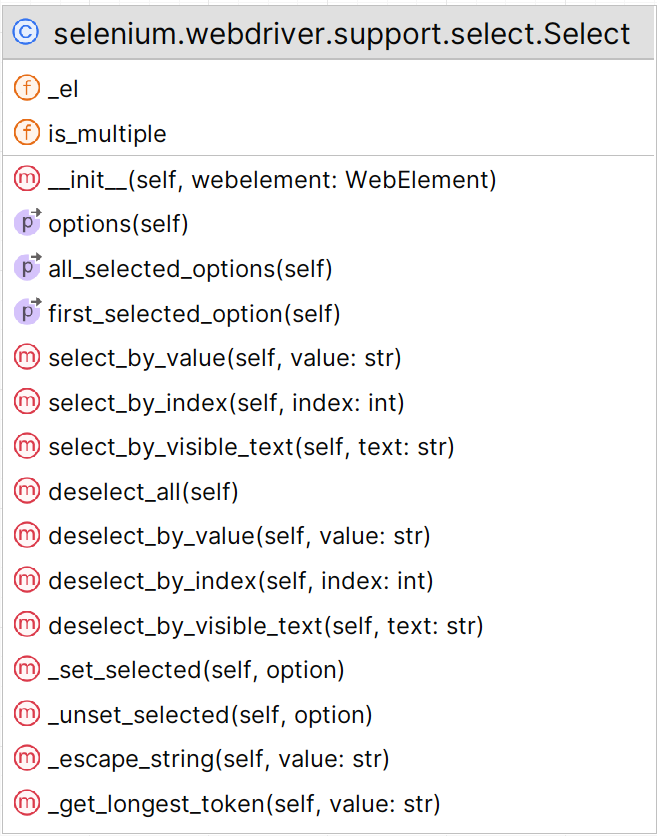
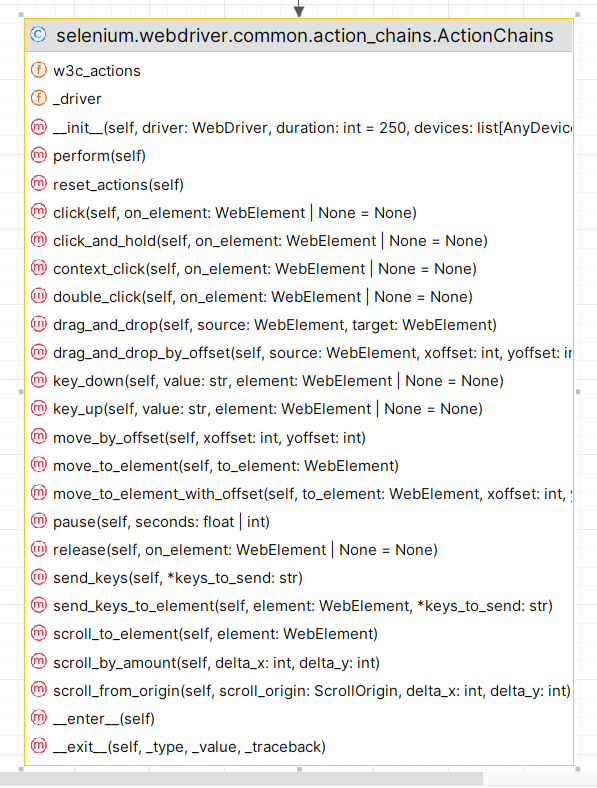
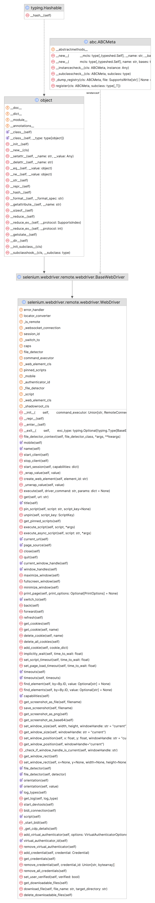
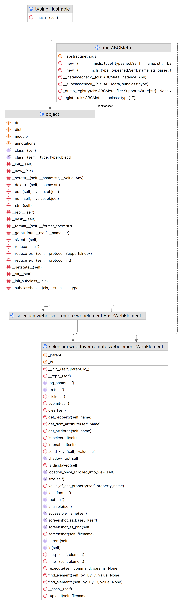

WebDriver¶
真正的用户正在操作浏览器
入门¶
安装¶
# 有网首选
pip install selenium
# 无网
下载 .whl 文件（无网url）
pip install *.whl
pip install selenium-4.25.0-py3-none-any.whlfirst_selenium.py¶
from selenium import webdriver
from selenium.webdriver.common.by import By
# 1. 使用驱动实例开启会话
driver = webdriver.Chrome()
# 2. 在浏览器上执行操作
driver.get("https://www.selenium.dev/selenium/web/web-form.html")
# 3. 请求 浏览器信息
title = driver.title
print(title)
# 4. 建立等待策略
driver.implicitly_wait(0.5)
# 5. 发送命令 查找元素
text_box = driver.find_element(by=By.NAME, value="my-text")
submit_button = driver.find_element(by=By.CSS_SELECTOR, value="button")
# 6. 操作元素
text_box.send_keys("Selenium")
submit_button.click()
# 7. 获取元素信息
message = driver.find_element(by=By.ID, value="message")
text = message.text
print(text)
# 8. 结束会话
# 这将结束驱动程序进程, 默认情况下, 该进程也会关闭浏览器. 无法向此驱动程序实例发送更多命令.
driver.quit()Web 应用的自动化测试、重复性任务、网页爬虫
Test Runner 即使不使用 Selenium 做测试，如果你有高级用例，使用一个 test runner 去更好地组织你的代码是很有意义的。学会使用 before/after hooks 和分组执行或者并行执行将会非常有用。
pytest - 由于其简单性和强大的插件，许多人的首选。
from selenium import webdriver
from selenium.webdriver.common.by import By
def test_eight_components():
driver = setup()
title = driver.title
assert title == "Web form"
driver.implicitly_wait(0.5)
text_box = driver.find_element(by=By.NAME, value="my-text")
submit_button = driver.find_element(by=By.CSS_SELECTOR, value="button")
text_box.send_keys("Selenium")
submit_button.click()
message = driver.find_element(by=By.ID, value="message")
value = message.text
assert value == "Received!"
teardown(driver)
def setup():
driver = webdriver.Chrome()
driver.get("https://www.selenium.dev/selenium/web/web-form.html")
return driver
def teardown(driver):
driver.quit()
元素定位¶
如果没有唯一的 id，那么最好使用写得好的 CSS 选择器来查找元素。
元素选择策略¶
在 WebDriver 中有 8 种不同的内置元素定位策略
| 定位器 Locator | 描述 |
|---|---|
| class name | 定位class属性与搜索值匹配的元素（不允许使用复合类名） |
| css selector | 定位 CSS 选择器匹配的元素 |
| id | 定位 id 属性与搜索值匹配的元素 |
| name | 定位 name 属性与搜索值匹配的元素 |
| link text | 定位link text可视文本与搜索值完全匹配的锚元素 |
| partial link text | 定位link text可视文本部分与搜索值部分匹配的锚点元素。如果匹配多个元素，则只选择第一个元素。 |
| tag name | 定位标签名称与搜索值匹配的元素 |
| xpath | 定位与 XPath 表达式匹配的元素 |
driver.find_element(By.ID, "lname").clear()
driver.find_element(By.CSS_SELECTOR, "#fname").send_keys('css_selector')
driver.find_element(By.XPATH, "//input[@value='f']").click()
driver.find_element(By.NAME, "newsletter").click()
driver.find_element(By.CLASS_NAME, "information").send_keys('class_name')
print(driver.find_element(By.TAG_NAME, "a").tag_name)
print(driver.find_element(By.LINK_TEXT, "Selenium Official Page").text)
print(driver.find_element(By.PARTIAL_LINK_TEXT, "Official Page").text)相对定位符¶
| 定位符 | 描述 |
|---|---|
| Above | 一个元素的上面一个元素 |
| Below | 一个元素的下面一个元素 |
| Left of | 一个元素的左面一个元素 |
| Right of | 一个元素的右面一个元素 |
| Near | 识别距离提供的定位符最多 50 像素的元素 |
| Chaining relative locators | 链接相对定位器:识别为在一个元素的上方/下方和另一个元素的右侧/左侧。 |
from selenium.webdriver.support.relative_locator import locate_with
# Above 上面
email_locator = locate_with(By.CSS_SELECTOR, "input").above({By.ID: "lname"})
driver.find_element(email_locator).send_keys("above")
# Below 下面
password_locator = locate_with(By.TAG_NAME, "input").below({By.ID: "fname"})
driver.find_element(password_locator).send_keys("below")
# Left of 左侧
left_of = locate_with(By.TAG_NAME, "input").to_left_of({By.CSS_SELECTOR: 'input[value="f"]'})
driver.find_element(left_of).click()
# Right of 右侧
# right = [By.CSS_SELECTOR, 'input[value="m"]']
submit_locator = locate_with(By.TAG_NAME, "input").to_right_of({By.CSS_SELECTOR: 'input[value="m"]'})
driver.find_element(submit_locator).click()
# Near 50像素
near_locator = locate_with(By.TAG_NAME, "input").near({By.CSS_SELECTOR: 'input[value="1"]'})
driver.find_element(near_locator).send_keys("near_locator")
# Chaining relative locators 链接相对定位器
# 上右
above_to_right_of = locate_with(By.TAG_NAME, "input").above({By.ID: "baidu"}).to_right_of({By.ID: "1"})
driver.find_element(above_to_right_of).click()
# 上左
above_to_left_of = locate_with(By.TAG_NAME, "input").above({By.ID: "baidu"}).to_left_of({By.ID: "2"})
driver.find_element(above_to_left_of).click()
# 下右
below_to_right_of = locate_with(By.TAG_NAME, "input").below({By.ID: "baidu"}).to_right_of({By.ID: 'email'})
driver.find_element(below_to_right_of).send_keys("below_to_right_of")
# 下左
below_to_left_of = locate_with(By.TAG_NAME, "input").below({By.ID: "baidu"}).to_left_of({By.ID: 'password'})
driver.find_element(below_to_left_of).send_keys("123456@qq.com")等待¶
隐式¶
driver.implicitly_wait(30)显示¶
强制¶
import time
time.sleep(3)文件上传¶
单个文件¶
[!CAUTION]
由于 Selenium 无法与文件上传对话框交互，因此它提供了一种无需打开对话框即可上传文件的方法。如果元素是类型为 file 的 input 元素，则可以使用 send keys 方法将要上传的文件的完整路径发送。
<input type="file">file_input = driver.find_element(By.CSS_SELECTOR, "input[type='file']")
file_input.send_keys(upload_file)
driver.find_element(By.ID, "file-submit").click()多个文件¶
pyperclip.copy(path) # 将图片文件复制到剪贴板上
pyperclip.paste() # 获取剪贴板上的内容
pyautogui.hotkey('ctrl', 'v') # 将剪贴板上的文件路径粘贴到应用窗口
pyautogui.press('enter') # 模拟回车Select元素¶

单选¶
# 具有 disabled 属性的选项可能无法被选择.
select_element = driver.find_element(By.NAME, "selectomatic")
select = Select(select_element)
# 文本
select.select_by_visible_text('Four')
print(select.first_selected_option.text)
# 值
select.select_by_value("two")
print(select.first_selected_option.text)
# 索引
select.select_by_index(3)
print(select.first_selected_option.text)复选¶
select_multi = driver.find_element(By.ID, 'multi')
select = Select(select_multi)
option_list = select.options
for i in option_list:
print(i.text)
# print(option_list)
selected_option_list = select.all_selected_options
for i in selected_option_list:
print(i.text)
# 选中所有
select_multi = driver.find_element(By.ID, 'multi')
select = Select(select_multi)
# 确保 <select> 支持多选
if select.is_multiple:
# 遍历所有选项并选择
for option in select.options:
select.select_by_visible_text(option.text) # 或使用 select_by_value(option.get_attribute('value'))
print("已选择全部选项")
# 验证选中的选项
selected_options = [option.text for option in select.all_selected_options]
print("选中的选项:", selected_options)Actions接口¶

Cookie¶
切换win窗口、标签页、IFrames框架¶
| 属性、方法名 | 解释 |
|---|---|
| driver.current_window_handle | 查看当前driver实例在那个活动窗口 |
| driver.window_handles | 查看所有的的窗口 |
| driver.switch_to.window() | 切换窗口 |
| driver.switch_to.frame() | 切换frame框架 |
| driver.switch_to.default_content() | 离开frame框架 |
| driver.close() | 关闭标签页或窗口 |
| driver.switch_to.new_window('tab') | 打开新标签页并切换到新标签页 |
| driver.switch_to.new_window('window') | 打开一个新窗口并切换到新窗口 |
| driver.quit() | 退出浏览器 关闭所有与 WebDriver 会话相关的窗口和选项卡 结束浏览器进程 结束后台驱动进程 通知 Selenium Grid 浏览器不再使用，以便可以由另一个会话使用它(如果您正在使用 Selenium Grid) |
| driver.get_window_size().get("width") | 获取窗口的宽 |
| driver.get_window_size().get("height") | 获取窗口的高 |
| driver.set_window_size(1024, 768) | 设置窗口大小 |
| driver.get_window_position().get('x') | 左上角的坐标 |
| driver.get_window_position().get('y') | 左上角的坐标 |
| driver.set_window_position(0, 0) | 将窗口移动到主显示器的左上角 |
| driver.maximize_window() | 窗口最大化 |
| driver.minimize_window() | 窗口最小化（selenium4以上版本） |
| driver.fullscreen_window() | 窗口全屏 |
| driver.save_screenshot('./image.png') | 屏幕截图 |
| ele.screenshot('./image.png') | 元素截图 |
| driver.execute_script('return arguments[0].innerText', header) | 执行脚本 |
| from selenium.webdriver.common.print_page_options import PrintOptions | 打印页面Chromium |
滑块操作¶
# 定位滑块
ele_k = self.driver.find_element(*LoginPage.ele_s)
ele_t = self.driver.find_element(*LoginPage.ele_e)
distance = ele_t.size['width'] - ele_k.size['width']
# 执行鼠标操作
ac = ActionChains(self.driver)
ac.drag_and_drop_by_offset(ele_k, xoffset=distance, yoffset=0).perform()
time.sleep(1)
# 滑块状态
status = self.driver.find_element(*LoginPage.status)
print(status.text) # 验证通过
window窗口¶
driver.get('https://tieba.baidu.com')
print(driver.current_window_handle)
driver.switch_to.new_window('window')
driver.get('https://taobao.com')
print(driver.current_window_handle)
print(driver.window_handles)
B65DEDA5C79063FBAD1BE2B0D7D46B51
3D4F91F700FAA2144F86F63341232B78
['B65DEDA5C79063FBAD1BE2B0D7D46B51', '3D4F91F700FAA2144F86F63341232B78']标签¶
driver.get('https://tieba.baidu.com')
driver.find_element(By.LINK_TEXT, '立即注册').click()
print(driver.current_window_handle)
window_list = driver.window_handles
try:
driver.find_element(By.NAME, 'userName').send_keys('123123')
except:
driver.switch_to.window(window_list[1])
driver.find_element(By.NAME, 'userName').send_keys('123123')iframe¶
<iframe id="i01" name="myframe" src="https://www.taobao.com" width="100%" height="100%"></iframe>
<iframe id="i02" name="tianmao" src="https://www.tmall.com" width="100%" height="100%"></iframe>try:
driver.find_element(By.LINK_TEXT, '免费注册').click()
except NoSuchElementException:
# WebElement 先定位，在切换
iframe = driver.find_element(By.CSS_SELECTOR, 'body>iframe:first-child')
driver.switch_to.frame(iframe)
driver.find_element(By.LINK_TEXT, '免费注册').click()
# 使用name,id
driver.switch_to.frame('i01')
driver.find_element(By.LINK_TEXT, '免费注册').click()
driver.switch_to.frame('myframe')
driver.find_element(By.LINK_TEXT, '免费注册').click()
# 使用索引
iframe = driver.find_elements(By.TAG_NAME, 'iframe')[1]
driver.switch_to.frame(iframe)
driver.find_element(By.LINK_TEXT, '亲，请登录').click()
# 离开框架
driver.switch_to.default_content()JavaScript警告框,提示框和确认框¶
print(alert.text) # 获取弹出框中的文本
print(alert.send_leys('向弹框中输入内容')) # 向弹框中输入内容
# Alerts 警告框
driver.find_element(By.ID, "1").click()
wait = WebDriverWait(driver, 5)
alert = wait.until(lambda d: d.switch_to.alert)
alert.accept()
time.sleep(2)
# Confirm 确认框
driver.find_element(By.ID, "2").click()
wait = WebDriverWait(driver, 5)
confirm = wait.until(lambda d: d.switch_to.alert)
confirm.dismiss() # 确认按钮
confirm.accept() # 取消按钮
time.sleep(2)
# Prompt 提示框
driver.find_element(By.ID, "3").click()
wait = WebDriverWait(driver, 5)
prompt = wait.until(lambda d: d.switch_to.alert)
prompt.accept()
prompt.accept()
time.sleep(2)
webdriver方法¶

webelement方法¶

浏览器配置¶
Chrome特定功能¶
默认情况下，Selenium 4与Chrome v75及更高版本兼容. 但是请注意Chrome浏览器的版本与chromedriver的主版本需要匹配.
server¶
# 默认服务
service = webdriver.ChromeService()
# 制定驱动位置
service = webdriver.ChromeService(executable_path=chromedriver_bin)
# 驱动程序端口
service = webdriver.ChromeService(port=1234)
# 日志
service = webdriver.ChromeService(service_args=['--append-log', '--readable-timestamp'],log_output=get_log_path_and_name())
from pathlib import Path
BASE_DIR = Path(__file__).resolve().parent
def get_log_path_and_name():
"""
按照年月生成日志目录
按照年月日生成日志文件
"""
now = datetime.now()
log_dir = BASE_DIR / 'logs' / f"{now.year}-{now.month:02d}"
if not os.path.exists(log_dir):
os.makedirs(log_dir)
log_file = log_dir / f"{now.year}-{now.month:02d}-{now.day:02d}.log"
return str(log_file)
options¶
options = webdriver.ChromeOptions()
# 搜索引擎选择屏幕
options.add_argument('--disable-search-engine-choice-screen')
# 禁止下载语言插件
options.add_argument(
'--disable-features=OptimizationGuideModelDownloading,OptimizationHintsFetching,OptimizationTargetPrediction,'
'OptimizationHints')
# 无痕模式
options.add_argument("--incognito")
# 设置语言
options.add_argument("lang=zh-CN")
# 窗口最大化
options.add_argument("--start-maximized")
# 禁止硬件加速
options.add_argument("--disable-gpu")
# 禁止图片
options.add_argument("blink-settings=imagesEnabled=false")
# 浏览器稳定版本
options.browser_version = 'stable'
# 禁止自动关闭浏览器
options.add_experimental_option("detach", True)
# 禁止显示"Chrome 正受到自动测试软件的控制。"
options.add_experimental_option('excludeSwitches', ['enable-automation'])Grid¶
本地控制测试用例、远端自动执行。
可以在不同平台的不同机器上运行测试用例。
多个浏览器和操作系统的组合上运行测试。
Selenium Manager¶
Selenium Manager 是 Selenium 项目的官方驱动程序管理器，它在每个 Selenium 版本中都是开箱即用的。对应浏览器包含版本
Chrome：Selenium 4.11.0
Firefox: Selenium 4.12.0
Edge： Selenium 4.14.0
使用 Selenium 驱动 Chrome 的典型示例。假设在启动新会话时，本地计算机上没有安装 Chrome驱动。在这种情况下，Selenium Manager 将发现、下载和缓存当前稳定的 CfT 版本（在 ~/.cache/selenium/chrome 中）。
Selenium IDE¶
Selenium IDE是一个记录和回放用户操作的浏览器扩展
安装¶
https://addons.mozilla.org/en-US/firefox/addon/selenium-ide/
查看扩展¶
- Chrome：chrome://extensions
- Firefox： about：addons
开始使用¶
Record a new test in a new project 在新项目中录制新测试 Open an existing project 打开现有项目 Create a new project 创建新项目 Close the IDE 关闭 IDE